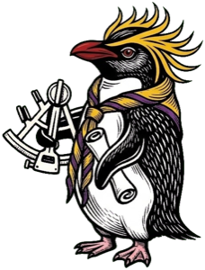

Scouting · Exploring the world
新竹孔廟 參觀小百科
🌓 深淺色
照著參觀路線，從最前面的泮池一路走到大成殿。點建築的名字，看看它的介紹。
📍 新竹市東區公園路 289 號（新竹公園內）
🕗 週二至週日 8:00–17:00（除夕休館）
全部展開
全部收合
找找看任務
到了現場，一項一項找出來，找到就打勾。打勾的紀錄只會存在這支手機或電腦上。
參觀禮儀
孔廟是祭祀孔子的地方，說話輕聲，不追逐奔跑。
不攀爬泮池的石欄杆，也不要把手伸進池子裡。
進出門口時跨過門檻，不踩在門檻上。
神位、供桌和祭器只用眼睛看，不用手摸。
拍照前先看看有沒有人在參拜，不要擋到別人。
自己的垃圾自己帶走，讓孔廟保持乾淨。